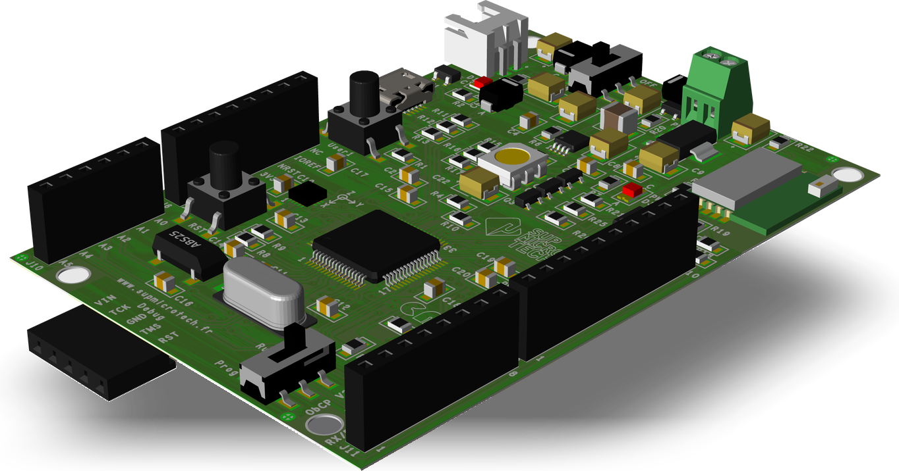

ILI9341 · 320 × 240 · TACTILE
LAB ObCP · ObCP_Adventure
ObCP Adventure
Jeu de plateformes en C sur écran tactile : dix niveaux, physique à 60 Hz, affichage par bandes et DMA.
version 1.0.0
régénérable par CubeMX
simulateur PC